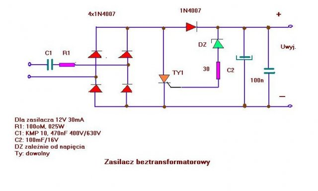
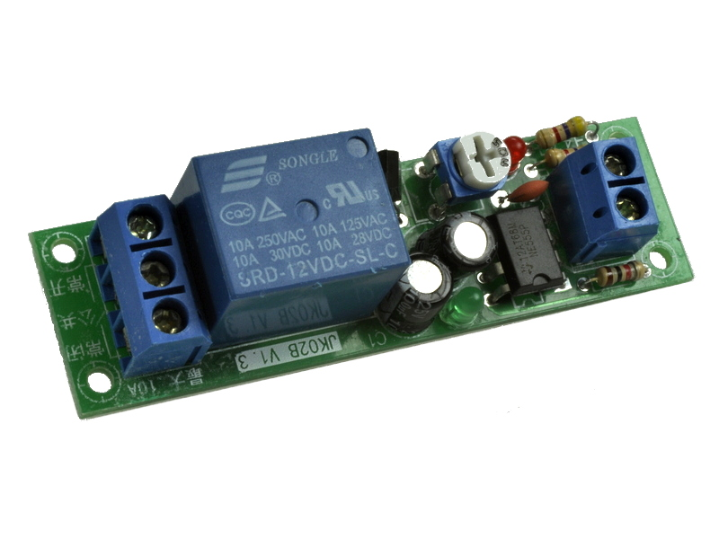

Zasilacz Beztransformatorowy
Jest to zasilacz,w którym nie stosuje się transformatora, a zmniejszenie napięcia w zasilaczu zachodzi na impedancji włączonej szeregowo z prostownikiem zasilacza.
Zasilacze takie mają małą wydajność prądową, zwykle nie większą niż 100 mA i nie są odseparowane galwanicznie od sieci.

Budowa:
By zmniejszyć straty energii, głównym elementem tworzącym impedancję obciążenia jest kondensator.
Im większa jest pojemność tego kondensatora – a tym samym mniejsza reaktancja – tym większy będzie maksymalny prąd wyjściowy zasilacza.
Dzięki zjawisku przesunięcia fazowego między prądem a napięciem w idealnym kondensatorze nie pobiera on żadnej mocy.
Kondensator, wraz z użytą dioda Zenera i rezystorem połączonym szeregowo z kondensatorem, tworzą dzielnik napięcia.
Rezystor połączony równolegle z kondensatorem umożliwia rozładowanie kondensatora w przypadku odłączenia zasilacza od sieci, zapobiegając w ten sposób ewentualnemu porażeniu prądem z kondensatora, na którym w chwili wyłączenia z obwodu może istnieć wysokie napięcie.
Rezystor włączony szeregowo z kondensatorem ogranicza prąd w momencie włączenia układu do sieci zasilającej, zapobiegając w ten sposób uszkodzeniu elementów. Jako kondensatora ograniczającego prąd nie można używać kondensatora elektrolitycznego (spolaryzowanego), ze względu na występujące na jego zaciskach napięcie przemienne.
Jako alternatywę dla kondensatora można użyć rezystora dużej mocy. Wadą takiego rozwiązania jest niepotrzebna strata mocy na rezystorze ograniczającym prąd.
Zalety:
1.Mała masa
2.Małe wymiary
3.Względnie niski koszt wykonania
Wady:
1.Niewielki prąd wyjściowy
2.Brak separacji galwanicznej z siecią zasilającą
3.Niebezpieczeństwo porażenia prądem elektrycznym
Zastosowanie:
1.Ładowarki do akumulatorów małych latarek LED
2.Układy zasilania urządzeń sterujących
